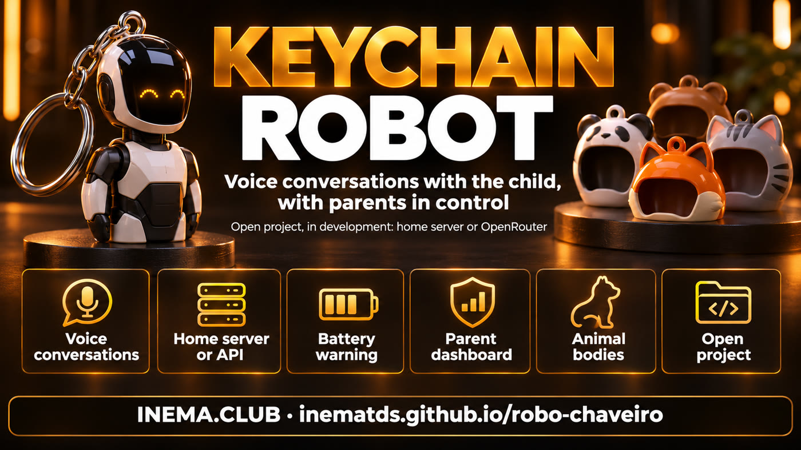

Your child carries a pocket-sized robot that talks with them, and you decide when and what about
You want your child to talk with an AI without handing them a phone, and without losing control over what they hear. The Keychain Robot is a R$132 board (shipping not included) with a screen and voice, about the size of a keychain, that responds aloud. The design lets parents choose its name, voice, schedule, and daily time limit. Today it’s only a project: the board hasn’t arrived yet.
Illustrative artwork. The board hasn’t arrived yet; nothing has been flashed onto it.
In brief
This is an open project to turn a small board with a 1.54" screen into a kind of pocket pet that talks by voice: the child holds a button, speaks, and it replies aloud, showing a big-eyed face on the screen. It “thinks” in one of three ways: through a home computer, directly through an AI service on the internet (OpenRouter), or through the home computer relaying to that service. Parents will configure everything from a phone. Today, the design and a home server already working in a sibling project exist; the board and its firmware do not yet.

Illustrative artwork: the little metal figure is decoration. The real keychain is the small green square board with a face screen, shown in the image above.
Video
Understand it in 2 minutes
The R$ 132 body, where the AI lives and what parents will be able to decide from their phone.
A face in your pocket, with the brain somewhere else
A keychain-sized board can’t understand speech or think up a response on its own; that takes large models. So it’s just the body: it listens, shows a face, and speaks. The thinking happens elsewhere.
🔑 The body, in your pocket
A SpotPear board with a 1.54" screen, microphone, speaker, two buttons, and a case with a hole for hanging. The child holds the button, speaks for up to 15 seconds, and releases it. There’s no camera.
🧠 The brain, at home or online
At home, a program on the computer turns speech into text, asks an AI for a response (Claude, paid by subscription, not per question), and generates the voice right there. Away from home, the design includes an online AI service (OpenRouter), which hasn’t been authorized or tested yet.
🔋 Warns before shutting down
It was designed to run on battery power (whether the keychain version includes a battery, and its capacity, have not yet been verified). The design: as the battery runs low, it shows sleepy eyes, then says “please plug me in,” and finally says goodbye and goes to sleep. The phrases are stored on the device, so the warning works without internet.
Safety by design: use a key ring or carabiner, never a neck cord without a breakaway clasp. No small parts that can come loose. The project rule is that the robot won’t ask for a child’s full name, address, or school. On the home server, the AI has no tools: it only writes text and can’t do anything on the computer.
What exists today
What’s ready and what’s still just a design
Status as of 11/15/2026. No promises: only what has been done.
✓ Ready (in the sibling project)
The home server
The home brain is the one from Robô CoreS3 Lite, already tested with recordings: 6.8 to 7.6 seconds measured until the first sound of the response, with the models loaded. The keychain will use the same server.
◐ Purchased, on the way
The board
SpotPear ESP32-S3 1.54", probably the “muma” model, purchased for R$132.14 on 11/15/2026. The exact model, battery, and audio pins will only be confirmed once it’s in hand.
○ Design only
Board firmware, dashboard, and battery warning
The board firmware, parent dashboard, battery warning, and online connection are designed, with a completion criterion for each. None of them has been written yet.
No unexpected cloud service: the board ships with firmware that sends voice to a third-party service (XiaoZhi). It won’t be activated: children’s voices won’t be sent outside the home without a decision from the parents. The factory firmware can be restored later using files from SpotPear itself.
Three brains
At home, directly online, or both together
The same keychain can use any of these. Only the home server exists today; the other two will only be added with the project owner’s authorization to use the paid service.
Through the home computer
Directly online (OpenRouter)
Home computer relays to the internet
Where it works
On home Wi-Fi, with the computer turned on
On any Wi-Fi, including a phone’s hotspot
Wherever the keychain can reach the computer
Response time
6.8 to 7.6 seconds until the first sound, measured in the sibling project
Not measured
Not measured
Cost
Only the Claude subscription and a computer left on
Pay per use, with a daily cap
Pay per use
Paid service password stored on the keychain
None
Its own, with a daily spending cap; if the keychain is lost, just deactivate it
None
Voice
Generated on the home computer
The service’s voice
The home voice or the service’s voice
Status
Exists (sibling project)
Design only; no requests have been made
According to the OpenRouter documentation, a full turn fits in one request: the recording is sent, and the response comes back in audio and text chunks, which the keychain plays as they arrive. Which voice models are available there today and how much they cost haven’t been checked yet.
Parents in control
You’ll configure it from your phone, and your child will know you can see
○ Design only Two-screen design: initial setup on the keychain itself, and a family dashboard on the home computer that opens on a phone.
🏷️ Give it a name and personality
Keychain name, child’s nickname (never their full name), age range, personality (playful, calm, curious, teacher), voice, eye color, and maximum volume.
⏰ Set limits
Allowed hours (outside them: “it’s time to rest”), minutes per day, a “pause now” button, topics parents want to block, and a daily spending cap when using OpenRouter.
👀 Keep track
Text-only history, with timestamps, and a daily summary. Retained for 0, 1, 7, or 30 days, then deleted automatically. Audio is off by default. Also shows battery level and last contact.
No hidden monitoring: the keychain will tell the child that their parents can see what they talk about. No location tracking: the board has no GPS, and the dashboard won’t try to find where the child is. Data stays on the family computer; when using OpenRouter, the text also passes through that service, and the dashboard will make that clear.
An idea for later
Animal and character bodies, with the keychain as the face
The keychain fits into a body, and the screen becomes the character’s face. These images are design concepts generated with AI (Codex), not finished products. This is for a future phase.
Shared rules: no magnets, plastic eyes, or parts that can come loose; speaker and microphone openings must stay clear; buttons and charging port must remain accessible; and the keychain must come out of the body for charging. The concepts, research, and links are in ideias/corpos/PROPOSTAS.md (in Portuguese).
Technical section
The kit: for anyone who wants to build one
From here on, this is the technical section: the board, protocol, commands, and phases. You don’t need this part to understand what came before.
What it is
The board, the reused server, and the documents
Everything is in the repository, in Portuguese: the definition, phased plan with completion criteria, and body concepts.
🟩 SpotPear ESP32-S3 1.54" (probably “muma”)
ESP32-S3 with 2.4 GHz Wi-Fi, 16 MB flash, and 8 MB PSRAM; 240 × 240 display (ST7789), touch only on the “Touch” version; microphone and speaker; power and BOOT buttons; USB-C charging. No camera. Specs are from SpotPear’s product sheet and wiki, not yet checked against the actual board.
🖥️ Server from the sibling project
robo-cores3-lite, port 8770, used as is, with the X-Robo-Id: chaveiro-1 header. This project does not copy its code.
📄 Full design
DEFINICAO.md (in Portuguese) covers the board (section 2), the three brains (4), away from home (5), battery (7), children (9), parent dashboard (13), and bodies (14).
How it works
One conversation turn through the home server
Half-duplex conversation: it either listens or speaks. Same as the sibling project, without the photo.
Hold BOOT→/v1/aquecer→Record up to 15 s→/v1/conversa→Whisper→Claude (claude -p), no tools→Chatterbox→Play audio and show the face
Face states: ready, listening, thinking, speaking; on error, show an error face for 2 seconds and return to ready without restarting. With OpenRouter, the turn becomes an HTTPS request with the recording, and the response arrives in audio chunks (streaming).
Prerequisites
What you need
For the home brain, the same prerequisites as the sibling project (Linux with an NVIDIA graphics card, inemavox, Claude subscription). They’re explained in the Robô CoreS3 Lite guide.
The board
SpotPear ESP32-S3 1.54" with a case. The first time, power it on without configuring Wi-Fi for the factory firmware.
arduino-cli
Arduino’s command-line tool, with the esp32:esp32 package. The board to select in the compiler will be determined once the board is in hand.
arduino-cli version
Getting started · step by step
What you can do today
Steps 1 to 3 work today, without the board. Step 4 is the first step that needs it. The board firmware doesn’t exist yet.
1
Download both projects
This one, with the design, and its sibling, with the server.
Create the configuration: replace ROBO_TOKEN with a long string and point VOZ_REF to a short WAV file with the voice the robot will imitate. Prerequisites (inemavox, Python environment, Claude Code) are in the sibling project guide. Then start the server on port 8770.
cd robo-cores3-lite
cp servidor/env.exemplo servidor/.env
nano servidor/.env # ROBO_TOKEN and VOZ_REFpython3 servidor/servidor.py
3
Test the brain with a recording
In another terminal, in the same folder as in step 1, send the test recording. It’s the same request the keychain will make.
cd robo-cores3-lite
python3 servidor/testar.py servidor/teste/pergunta.wav
4
When the board arrives: check whether it appears
Connect it with a USB-C cable, without activating the cloud factory firmware. A new port should appear.
arduino-cli board list
Roadmap
Phases, each with a completion criterion
The full plan, with a command or measurement to check each criterion, is in PLANO.md (in Portuguese).
F0
The board arrives and powers onIn progress: purchased on 11/15/2026, still on the way.
F1
Records and sends to the serverFind the audio and battery pins in the schematic; hold BOOT to speak.
F2
Plays the responseFive questions in a row, error face without restarting, measured battery life.
F2b
Battery warningThree levels calibrated to measured battery discharge; works without internet.
F2c
Setup and parent dashboardName, schedule, minutes per day, pause, text history. The dashboard can start before the board arrives.
F3
A real keychainKey ring, case, child persona tested with 10 questions.
F3b
Online brain (OpenRouter)Only after authorization for the service and purpose.
F4
Optional featuresAnimal bodies, automatic brain switching, waiting phrases, wake word.